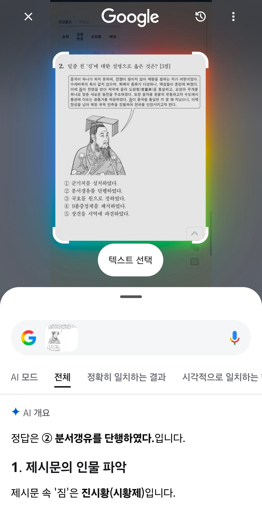

AI도 정답을 못 맞추는 고도의 비틀기 문항이었음 ㅋㅋ

AI도 정답을 못 맞추는 고도의 비틀기 문항이었음 ㅋㅋ
제미나이도 유료인데 틀려버리네 ㅋㅋㅋㅋ
정답은 ④번입니다. 밑줄 친 ‘짐’은 수나라를 세운 **수 문제(양견)**입니다.
결정적인 단서는 수도인 대흥성(장안)과 동관을 잇는 광통거를 건설했다는 점입니다. 수 문제는 남북조를 통일하고 도량형과 화폐를 정비했습니다. 또한 가문이 관리 선발에 큰 영향을 미치던 9품중정제를 폐지했습니다.
②의 분서갱유는 진시황의 정책입니다. 도량형과 화폐를 통일했다는 점은 두 황제에게 공통되므로, 이 문제에서는 광통거로 구별하면 됩니다.
GPT-6.2 Astra medium
정답은 ④번, 9품중정제를 폐지하였다.
밑줄 친 ‘짐’은 **수 문제(양견)**이다.
제시문의 결정적인 단서는 다음과 같다.
* 중국 통일 → 589년 남북조 통일
* 광통거 착공 → 수 문제의 운하 건설 사업
* 북방 유목 민족 정벌 → 돌궐에 대한 대외 정책
특히 광통거가 수 문제를 특정하는 핵심 단서이다. 도량형과 화폐의 통일은 진시황의 업적과도 겹치므로 주의해야 한다.
GPT-6.2 Sol medium
정답은 ④ 9품중정제를 폐지하였다.
밑줄 친 ‘짐’은 수나라를 세운 **수 문제(양견)**입니다. 수 문제는 남북조를 통일하고 도량형과 화폐를 정비했으며, 9품중정제를 폐지했습니다. ‘광통거’를 건설했다는 내용도 수 문제를 가리키는 단서입니다.
GPT-6 Luna high 다 잘푸는디
난 6extra high로도 틀리던데. 6.2로 하니 맞고.
EBS 보면 풀수 있게 만들었다 하더만 이것도 ebs에 나온건가?
아니면 교수가 이것도 만들어놓고 지금 ㅈㄴ 뿌듯해하고 있는 타입인걸까
이건 문제 자체가 엄청 어렵다기보단 함정 문제에 가까워서 ㅋㅋ 대부분의 학생들은 끝까지 안 보고 도량형 통일? 새 화폐 주조? 시황제! 하고 넘어가서 틀림
개인적으로 정답률 90퍼나 정답률 10퍼나 변별력 관점에서는 똑같다고 생각해서
광통거가 키워드였던 거 같은데 나야 세계사 공부 안 했으니 모르지만 교과서에는 다 있었던 거 같네. 무슨 중등교육과정 밖에서 가져온 정보로 킬러 문제 만드는 인간들도 있어서 그랬던 건데
제대로 된 모델로 돌려보면 바로 정답 말해주는디;
제미나이야ㅜㅜ
https://claude.ai/share/96a13e86-2cb2-4c6f-972f-439bcb014c4f 내 오푸스는 왜 틀리냐...?
고 짐 고
제미나이 이 새끼는 멍청해서 안됨
웹 무료모델 쓰는 애들은 ai 이슈에 발언권 없음
AI에 돈을 좀 쓰는 모양인데 하나 결제한다면 추천할만한 AI 있나요
2만원 티어에서
이미지생성 필요하면 지피티 아니면 클로드

나도 진시황인줄 알았네
정답: ④ 9품중정제를 폐지하였다.
지문 속 '짐'은 수 문제(양견)를 가리킴. 초반부의 '수레바퀴의 폭' 통일은 원래 진시황의 업적이 섞여 들어간 함정(또는 문항 출제 오류) 요소이나, 결정적 고유 업적인 '수도에서 동관에 이르는 광통거 착공'을 통해 수 문제임을 확정할 수 있음.
* ① 군기처를 설치하였다. : 청나라 옹정제가 황제 독재권을 강화하기 위해 설치함.
* ② 분서갱유를 단행하였다. : 진시황이 사상 통제를 위해 단행한 정책으로, 지문 앞부분의 수레바퀴 폭·도량형·화폐 통일 서술만 보고 고르기 쉬운 대표 오답 선지임.
* ③ 국호를 원으로 정하였다. : 몽골 제국의 쿠빌라이 칸(원 세조)에 해당함.
* ④ 9품중정제를 폐지하였다. : 수 문제가 문벌 귀족의 기반을 약화하고 과거제를 도입하면서 폐지한 제도임.
* ⑤ 장건을 서역에 파견하였다. : 한 무제가 흉노를 견제할 동맹(대월지)을 구하기 위해 파견함.
지문의 '광통거 착공'이 수 문제의 고유 업적이므로, 9품중정제를 폐지하고 과거제를 실시한 ④번이 정답임.
제미나이 하이드로젠임
Gpt instant 한 7번 갈구니 알아먹음ㅋㅋ
나이과출신인디
옛날 문과애들은 저런거3-4과목 거기다 제2외국어 어케했냐
역덕들은 초상화만 보고 맞춘다더만
chatgpt는 6인데 못푸네 ㅋㅋㅋ